Mehrfach-Umbenennen ermöglicht es uns, viele ausgewählte Dateien auf einmal auf verschiedene Arten umzubenennen.
Wenn wir mit Mehrfach-Umbenennen noch nicht vertraut sind, ist es ratsam, vor dem eigentlichen Ausprobieren einige Tests mit Kopien echter Dateien in einem temporären Verzeichnis durchzuführen.
Wenn wir das Prinzip verstanden haben, können wir Mehrfach-Umbenennen mit den echten Dateien verwenden.
Nehmen wir an, wir haben eine Reihe von Podcast-MP3-Dateien heruntergeladen.
Wir möchten sie vielleicht umbenennen, damit jede einen aussagekräftigen Namen erhält.
Hier ist Mehrfach-Umbenennen nützlich, weil es uns hilft, diese vielen Dateien in einem Vorgang umzubenennen.
Wir wählen die Elemente, die wir umbenennen wollen, in einem Panel aus.
Dann rufen wir Mehrfach-Umbenennen auf, entweder über
Damit gelangen wir zum Dialogfenster von Mehrfach-Umbenennen, etwa so:
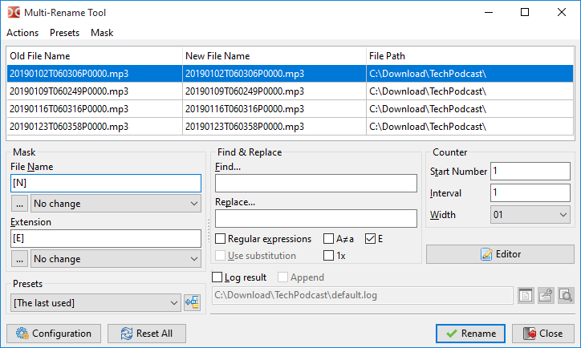
Oben sehen wir eine Tabelle mit den Dateien, die wir im Quellpanel ausgewählt haben, eine Datei pro Zeile, die umbenannt werden sollen. Wir können die Dateiliste per Ziehen und Ablegen oder mit Shift+arrows neu ordnen. Um eine Datei aus der Liste zu entfernen, können wir die Taste Del verwenden (nachdem alle Dateien gelöscht wurden, schließt Double Commander Mehrfach-Umbenennen).
Die Tabelle hat drei Spalten:
| Vorschautabelle der Dateinamen von Mehrfach-Umbenennen | |
|---|---|
| Spaltenname | Beschreibung |
Alter Dateiname | Der aktuelle Name der Datei, die die Zeile darstellt |
Neuer Dateiname | Wie der neue Dateiname lauten würde, wenn wir das Umbenennen bestätigen |
Dateipfad | Aktueller Speicherort der Datei |
Die Idee ist, so lange zu bearbeiten, bis die Spalte Neuer Dateiname die gewünschten neuen Dateinamen zeigt.
Dann drücken wir die Schaltfläche Umbenennen, um die Dateien tatsächlich umzubenennen.
Uns stehen Werkzeuge zur Verfügung, um die gewünschten neuen Dateinamen zu erzeugen.
| Mögliche Werkzeuge | |
|---|---|
| Kategorie | Beschreibung |
Platzhalter | Einen aktuellen Teil des Dateinamens, seiner Eigenschaften oder seines Inhalts verwenden, um einen Teil der neuen Namen zu erzeugen |
Dateilisten | Eine Textdatei mit Namen, einer pro Zeile, die der Reihe nach auf jede Datei in derselben Reihenfolge angewendet werden |
Modifikatoren | Die resultierenden Zeichen der möglichen neuen Namen ändern, die aus den obigen Elementen entstehen |
Sehen wir uns die Platzhalter an, die wir verwenden können.
Hinweis: Platzhalter unterscheiden Groß- und Kleinschreibung!
Wir legen sie in dem Feld links fest, das mit Maske beschriftet ist.
Wie wir sehen, legen wir fest, was für den Dateinamen und die Erweiterung unseres gewünschten neuen Namens verwendet wird.
Diese Platzhalter stehen in eckigen Klammern.
Im Allgemeinen liefert jeder dieser Platzhalter eine Zeichenfolge, die Teil des Dateinamens oder der Erweiterung wird, die wir erzeugen wollen.
Wir können mehrere hintereinander angeben; der neue Teil des Dateinamens ist dann das Ergebnis der Verkettung aller dieser Teile.
Die grundlegenden Platzhalter sind:
Bei diesen beiden können wir Angaben machen, die einen Zeichenbereich des Dateinamens und/oder der Erweiterung begrenzen, der verwendet wird.
Sehen wir uns eine Tabelle an, die das Ergebnis anhand dieser Beispieldatei zeigt:
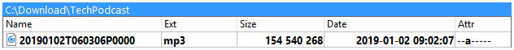
| Mögliche Platzhalter | ||
|---|---|---|
| Platzhalter | Beschreibung | Beispiel |
[Nx] | Zeichen an Position x des Dateinamens | [N9] = T |
[N-x] | dasselbe, aber vom Ende des Dateinamens gezählt | [N-5] = P |
[Nx:y] | Zeichenbereich von Position x bis y im Dateinamen | [N5:6] = 01 |
[N-x:-y] | dasselbe, aber vom Ende des Dateinamens gezählt | [N-6:-7] = 06 |
[Nx:-y] | dasselbe, aber die erste Position vom Anfang und die letzte vom Ende gezählt | [N10:-6] = 060306 |
[N-x:y] | dasselbe, aber die erste Position vom Ende und die letzte vom Anfang gezählt | [N-16:6] = 01 |
[Nx,y] | der Zeichenbereich beginnt bei x und ist y Zeichen lang | [N10,6] = 060306 |
[N-x,y] | dasselbe, aber vom Ende gezählt und y Zeichen nach links genommen | [N-8,4] = 0603 |
[Ex] | Zeichen an Position x der Erweiterung | [E1] = m |
[E-x] | dasselbe, aber vom Ende der Erweiterung gezählt | [E-1] = 3 |
[Ex:y] | Zeichenbereich von Position x bis y in der Erweiterung | [E2:3] = p3 |
[E-x:-y] | dasselbe, aber vom Ende der Erweiterung gezählt | [E-3:-2] = mp |
[Ex:-y] | dasselbe, aber die erste Position vom Anfang und die letzte vom Ende gezählt | [E1:-2] = mp |
[E-x:y] | dasselbe, aber die erste Position vom Ende und die letzte vom Anfang gezählt | [E-2:3] = p3 |
[Ex,y] | der Zeichenbereich beginnt bei x und ist y Zeichen lang | [E1,3] = mp3 |
[E-x,y] | dasselbe, aber vom Ende gezählt und y Zeichen nach links genommen | [E-1,2] = p3 |
Damit wir uns vergewissern, dass wir das Prinzip verstanden haben, hier ein Beispiel, in dem wir die Maske für den Dateinamen auf [N1,4]-[N5,2]-[N7,2] gesetzt haben.
Wir sehen, dass die Spalte Neuer Dateiname entsprechend den oben beschriebenen Ersetzungen aktualisiert wurde.
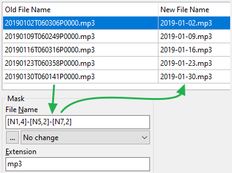
Hier sind weitere Platzhalter, weiterhin mit derselben Beispieldatei:
| Weitere Platzhalter | ||
|---|---|---|
| Platzhalter | Beschreibung | Beispiel |
[A] | steht für den vollständigen Dateinamen einschließlich des gesamten Pfads, der Verzeichnistrenner, der Erweiterung, des Doppelpunkts und des Punkts | [A] =Vollständiger Dateiname |
[A...] | der Bereich kann wie zuvor angegeben werden: [Ax], [Ax:y], [A-x:-y] usw. | [A-9:-5] = P0000 |
[Y] | das Jahr des Dateidatums, dargestellt durch die letzten 2 Ziffern | [Y] = 19 |
[YYYY] | das Jahr, dargestellt mit 4 Ziffern | [YYYY] = 2019 |
[M] | die Monatszahl des Dateidatums, ohne führende Null | [M] = 1 |
[MM] | die Monatszahl, bei Bedarf mit einer Null auf 2 Ziffern aufgefüllt | [MM] = 01 |
[MMM] | Abkürzung des Monats wie „jan“, „feb“, „mar“ usw. | [MMM] = Jan |
[MMMM] | vollständiger Monatsname wie „january“, „february“ usw. | [MMMM] = January |
[D] | die Tageszahl des Dateidatums, ohne führende Null | [D] = 2 |
[DD] | die Tageszahl, bei Bedarf mit einer Null auf 2 Ziffern aufgefüllt | [DD] = 02 |
[DDD] | Abkürzung des Wochentags wie „mon“, „tue“, „wed“ usw. | [DDD] = Wed |
[DDDD] | vollständiger Wochentagsname wie „monday“, „tuesday“ usw. | [DDDD] = Wednesday |
[h] | die Stundenzahl der Dateizeit, ohne führende Null | [h] = 9 |
[hh] | die Stundenzahl, bei Bedarf mit einer Null auf 2 Ziffern aufgefüllt | [hh] = 09 |
[n] | die Minutenzahl der Dateizeit, ohne führende Null | [n] = 2 |
[nn] | die Minutenzahl, bei Bedarf mit einer Null auf 2 Ziffern aufgefüllt | [nn] = 02 |
[s] | die Sekundenzahl der Dateizeit, ohne führende Null | [s] = 7 |
[ss] | die Sekundenzahl, bei Bedarf mit einer Null auf 2 Ziffern aufgefüllt | [ss] = 07 |
[G] | eine zur Laufzeit erzeugte GUID der Form: {XXXXXXXX-XXXX-XXXX-XXXX-XXXXXXXXXXXX} | [G] =Eine 16-Byte-GUID |
[Px] | benennt direkt die x-te Ebene des vollständigen Pfads, beginnend nahe der Wurzel | [P2] = TechPodcast |
[P-x] | benennt direkt die x-te Ebene des vollständigen Pfads, beginnend nahe dem Dateinamen | [P-2] = Download |
[C] | ein automatisch hochzählender Zähler für jeden Durchlauf unter Verwendung der Parameter des Feldes „Zähler“ (negative Zahlen werden ebenfalls unterstützt) | [C] =Zahl,die für jede Datei hochzählt |
[V:hint] | eine vom Benutzer definierte Variable „hint“, die beim eigentlichen Umbenennen abgefragt wird | [V:Guest] = Abfragedes Werts von Guest |
[[] | öffnende eckige Klammer unverändert einfügen | [[] = [ |
[]] | schließende eckige Klammer unverändert einfügen | []] = ] |
Hier ein weiteres Beispiel, in dem wir einige der obigen Platzhalter verwendet und die Maske gesetzt haben auf
[C] - [YYYY]-[MM]-[DD] @ [hh]-[nn]-[ss]
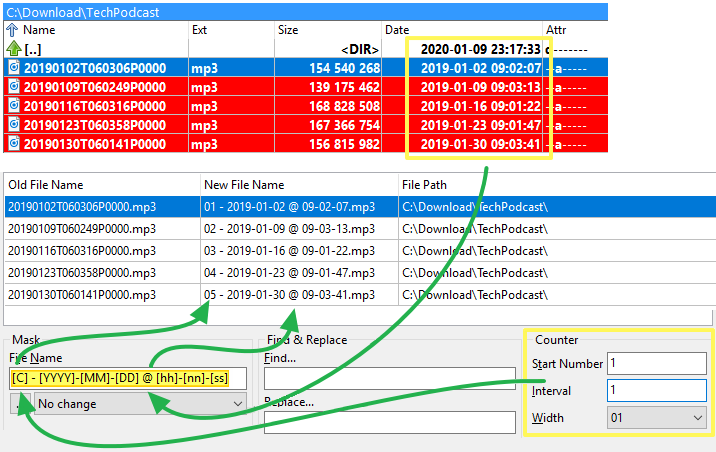
Mit der Zeit, wenn wir es oft verwenden, tippen wir aus dem Gedächtnis, was wir brauchen!
Bis dahin können wir die Schaltfläche unter jeder Maske drücken und gelangen zu einem Aufklappmenü, das die Anwendung den benötigten Text für uns einfügen lässt.
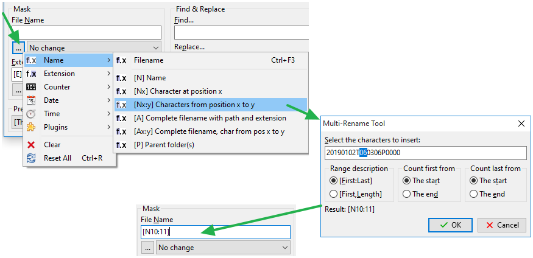
Wir können auch einen Platzhalter verwenden, der ein Inhalts-Plugin nutzt.
Es entnimmt der Datei das gewählte Feld und verwendet es als Teil des gewünschten neuen Namens.
Das folgende Beispiel verwendet ein Multimedia-Plugin, um die Länge einer MP3-Podcast-Datei zu ermitteln und sie in Klammern in den Dateinamen einzufügen:
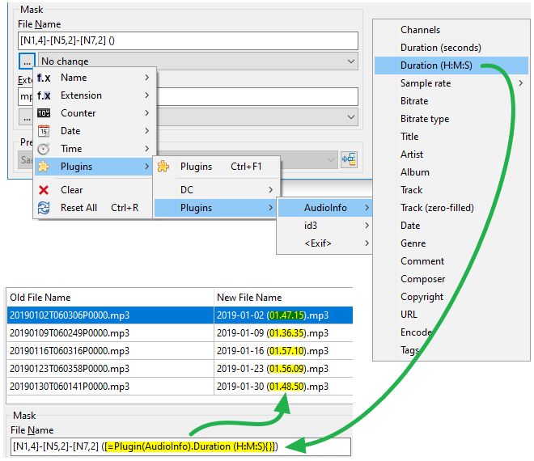
Wir können auch eine Textdatei mit einer Liste von Dateinamen verwenden, um unsere Dateien umzubenennen.
Es wird angenommen, dass jede Zeile dieser Textdatei den neuen Dateinamen einschließlich Erweiterung enthält, der der Datei an derselben Position gegeben wird.
Diese Liste kann
Es ist auch möglich, eine Liste von Dateinamen aus der Zwischenablage zu laden. Um diese Funktion zu verwenden, müssen Sie die Tastenkürzel-Einstellungen öffnen, zur Kategorie „Mehrfach-Umbenennen“ wechseln und ein Tastenkürzel für den Befehl cm_LoadNamesFromClipboard festlegen.
Wenn wir eine solche Datei bereits haben, drücken wir die Schaltfläche Editor und Namen aus Datei laden.
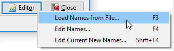
Dann werden wir aufgefordert, unsere Dateiliste anzugeben.
Wenn die Datei genauso viele Zeilen enthält wie Elemente umbenannt werden sollen, sehen wir in der Spalte Neuer Dateiname, wie der neue Dateiname jeder Datei lauten würde.
Der eigentliche Umbenennungsvorgang findet erst statt, wenn wir die Schaltfläche Umbenennen drücken.
Ähnlich wie bei der oben beschriebenen vorhandenen Liste kann Double Commander uns anbieten, diese Dateiliste zur Laufzeit zu erzeugen.
Wenn wir die Schaltfläche Editor und dann Namen bearbeiten... drücken, erzeugt das Werkzeug eine temporäre Textdatei anhand der ursprünglichen Dateinamen, die wie im vorherigen Punkt verwendet wird.
Wie oben, außer dass die Dateinamen in der Liste aus der aktuellen Spalte Neuer Dateiname stammen.
Diese Methode ist besonders hilfreich, wenn uns die Platzhalter-Methode „fast“ die gewünschten Dateinamen liefert und wir nur noch einige Nachbesserungen vornehmen müssen, um die Namen anzupassen, die unseren Bedarf noch nicht erfüllen.
Das folgende Beispiel zeigt uns den Ablauf bei dieser Methode.
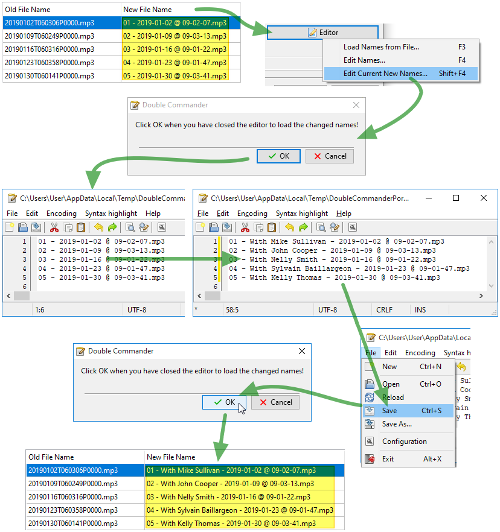
Unter Beachtung der oben genannten Platzhalter und der Dateiliste, und erst danach angewendet, können wir Modifikatoren einsetzen, um die künftigen neuen Dateinamen zu verändern.
Zu diesen Modifikatoren gehören:
Die möglichen Optionen sind die folgenden und wirken sich auf die Groß-/Kleinschreibung der Zeichen der neuen Dateinamen aus:
Auch wenn dieser Modifikator im Feld Maske steht, wird er auch angewendet, wenn die Dateinamen aus einer Liste stammen.
Die Zeichenfolge im Feld Suchen wird durch die Zeichenfolge im Feld Ersetzen ersetzt. Mehrere zusätzliche Funktionen sind ebenfalls verfügbar, siehe unten. Die Suche unterscheidet NICHT zwischen Groß- und Kleinschreibung!
Zusätzliche Optionen:
A≠a – aktiviert die Suche unter Berücksichtigung der Groß-/Kleinschreibung.
1x – wenn aktiviert, wird unabhängig von der Anzahl der Treffer nur der erste ersetzt.
E – wenn aktiviert, wird der Suchtext auch in Dateierweiterungen ersetzt.
Beide Parameter beeinflussen auch das Verhalten regulärer Ausdrücke.
Wir können nach einer einzelnen Zeichenfolge in der Zeichenkette suchen und sie durch eine andere ersetzen.
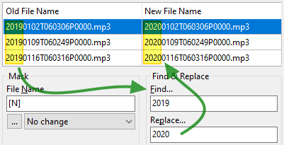
Wir können aber auch verschiedene Zeichenfolgen durch eine einzige ersetzen, indem wir die Zeichenfolgen wie in diesem Beispiel zwischen senkrechte Striche setzen. Dabei ersetzt 2020 jedes Vorkommen von 2017, 2018 oder 2019:
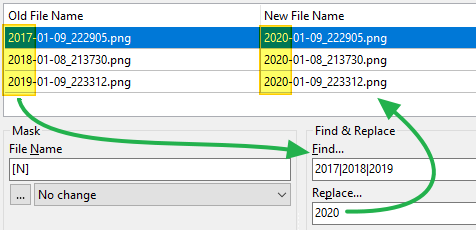
Wir können auch mehr als ein Paar von Zeichenfolgen festlegen, indem wir sie zwischen senkrechte Striche setzen.
Jede zu suchende Zeichenfolge erhält ihre Ersetzung an derselben Position.
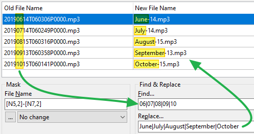
Wir haben auch die Möglichkeit, reguläre Ausdrücke für den Suchteil der Zeichenfolge sowie für die Ersetzung zu verwenden (Ersetzung verwenden ermöglicht die Verwendung von Teilausdrücken im Feld Ersetzen).
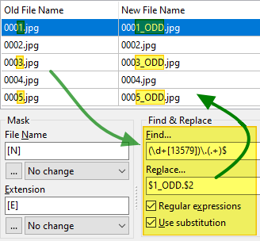
Wenn wir mit den oben genannten Methoden alle gewünschten neuen Dateinamen festgelegt haben, können wir die eigentliche Aktion Umbenennen starten.
Wenn doppelte Namen entdeckt werden, bietet Double Commander an, den Vorgang abzubrechen oder automatisch umzubenennen, indem eine Zahl angehängt wird: „name (1).ext“, „name (2).ext“ usw. Dabei sollten wir im Blick behalten, dass im zweiten Fall das automatische Anhängen einer Zahl nicht in der Spalte „Neuer Dateiname“ angezeigt wird.
Nach dem Umbenennen liest die Anwendung die Dateien erneut ein und füllt die obige Tabelle neu.
Die Spalte Alter Dateiname zeigt normalerweise das Ergebnis unseres Umbenennungsvorgangs.
Die Spalte Neuer Dateiname wird ebenfalls aktualisiert, indem dieselben noch festgelegten Platzhalter, Listen und Modifikatoren erneut angewendet werden.
Normalerweise sollten wir dann mehr auf die erste Spalte achten, da sie die neuen tatsächlichen Dateinamen darstellt, die wir gerade umbenannt haben.
Die Anwendung kann eine Protokolldatei erstellen oder an eine vorhandene anhängen, mit dem Ergebnis aller Umbenennungsversuche, die beim Starten des eigentlichen Umbenennens stattfanden.
Das kann später nützlich sein, wenn wir den ursprünglichen Dateinamen oder etwas suchen, das wir versehentlich umbenannt haben.
Wir müssen vielleicht dieselben Platzhalter und Modifikatoren für dieselbe Art des Mehrfach-Umbenennens wiederverwenden wie in einer früheren Sitzung.
Anstatt dieselbe Konfiguration, die wir bereits erstellt haben, immer wieder neu eintippen zu müssen, können wir eine aktuelle Konfiguration als Vorgabe speichern und sie später wiederverwenden.
Dazu klicken wir auf die Schaltfläche, die Zugriff auf die Aktionen zu den Vorgaben gibt, und wählen Speichern unter....
Wir vergeben einen aussagekräftigen Namen und haben nun eine Art Konfiguration zu unseren Vorgaben hinzugefügt.
Wenn wir sie das nächste Mal für ein stapelweises Umbenennen brauchen, klicken wir auf das Aufklappfeld der Vorgaben, wählen unsere Vorgabe, und die Felder werden mit dem gefüllt, was wir gespeichert haben.
Das genannte Menü bietet uns verschiedene Aktionen zu den Vorgaben, etwa Laden, Speichern, Umbenennen, Löschen, Sortieren usw.
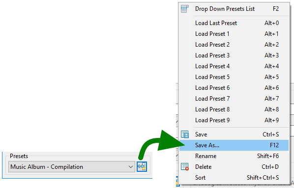
Auf den Konfigurationsseiten befinden sich zusätzliche Einstellungen zu Mehrfach-Umbenennen auf einer eigenen Seite.
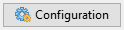
Wenn wir lieber eine Menüleiste oben im Fenster haben, die uns Zugriff auf alle zugehörigen Funktionen gibt und sie in einem Menü zeigt, aktivieren wir diese Option.
Es kann vorkommen, dass durch unsere Anpassungen ein für einen Dateinamen ungültiges Zeichen im resultierenden Namen einer Datei erscheint.
Um einen Fehler zu vermeiden, ersetzt Double Commander dieses ungültige Zeichen durch das, was wir in dieses Feld eingeben.
Wenn wir die ungültigen Zeichen einfach entfernen wollen, lassen wir dieses Feld leer.
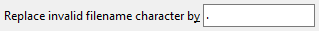
Diese Einstellung legt fest, welche Standardvorgabe jedes Mal geladen wird, wenn wir Mehrfach-Umbenennen aufrufen.
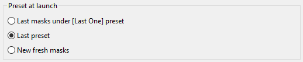
Wenn wir eine vorhandene Vorgabe geladen, mindestens eine Einstellung geändert haben und dann versuchen, das Fenster Mehrfach-Umbenennen zu verlassen, ohne unsere geänderte Vorgabe gespeichert zu haben, legt diese Option das Verhalten von Double Commander fest.
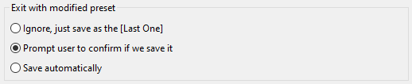
Diese Einstellungen legen fest, wie das Speichern der Umbenennungsprotokolldatei gehandhabt wird.
Herkömmlich wurde jede Umbenennungsprotokolldatei in jeder Vorgabe festgelegt.
Mit der Option hier können wir Double Commander anweisen, diese Protokolle an dem dort festgelegten einzigen Ort zu speichern, wobei das Ergebnis jeder Umbenennungsaktion an eine Umbenennungsprotokolldatei angehängt wird.
Wir können festlegen, das Protokoll in einem eigenen Verzeichnis pro Tag zu speichern.
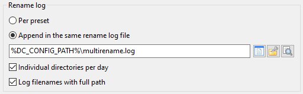